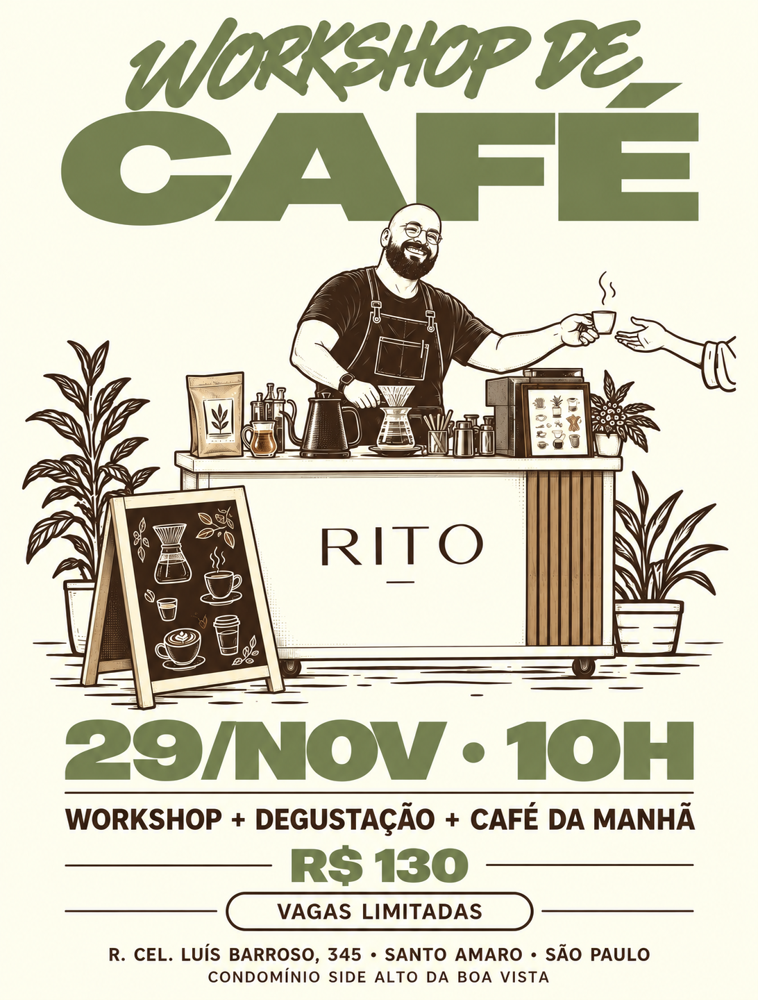

Café também é
um lugar de encontro.
Escolha uma edição e reserve seu lugar para viver o café com mais presença, descoberta e conexão.

INSCRIÇÕES ABERTASEVENTO FINALIZADOConfira as próximas edições
SÃO PAULO · EDIÇÃO 01
Workshop de Café
Workshop, degustação e café da manhã em uma experiência sensorial conduzida pela RITO.
Últimas vagas
29 de novembro · 10hVer edição →